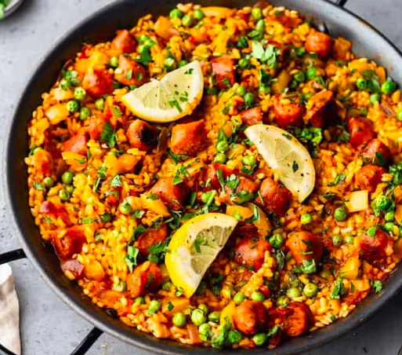

Heat the oven to 200C and boil 150ml water in the kettle
Mix jerk seasoning and the jerk paste together in a mixing bowl with a drop of oil
Add the chicken thighs and mix around well to coat
Place the chiken on a baking tray and cook for 20 minutes
Put 100ml boiling water into a sacepan with chicken stock and mix well. Add the coconut milk in here too
Add the rice and kidney beans to this, along with all the remaining juices. Mix well gently, and let it simmer for 15 minutes
Serve the rice with the chcken and sweetcorn, and squeeze the lime on top for extra seasoning
Spanish Paella

INGREDIENTS
150g King prawns50g Chorizo1 Onion150g Paella rice1 Red pepper 230g Tin chopped tomatoes2 chicken thighs
HOW TO :
Heat some oil in a wide frying pan over medium-high heat and fry the chicken until golden.
Add the onion, pepper, chorizo and paella garnish and fry for 2 minutes
Pour in the chopped tomatoes, mix well and fry for 2 more mins.
Boil a full kettle of water. Add the rice, a splash of white wine and the saffron seasoning and stir well
Stir in the paella paste, then add 600ml of boiling water and mix well. Bring it back to the boil and then reduce the heat to medium-low and leave to cook for 15 mins (no lid).
Stir in the prawns and peas into the rice anServe the rice with the chcken and sweetcord cook for 5 more minutes
Squeeze some lemon juice over the paella, and serve with extra lemon wedges